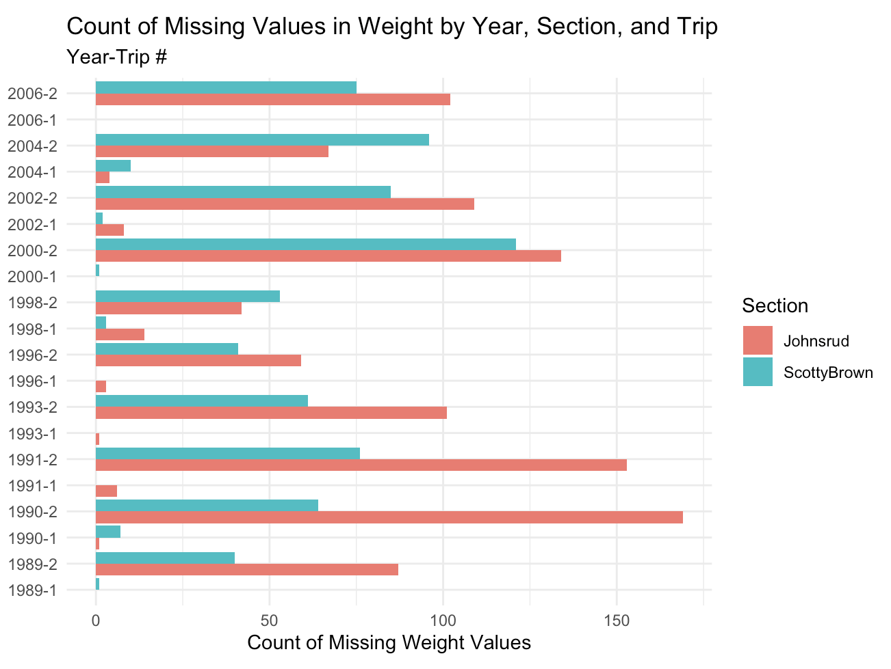
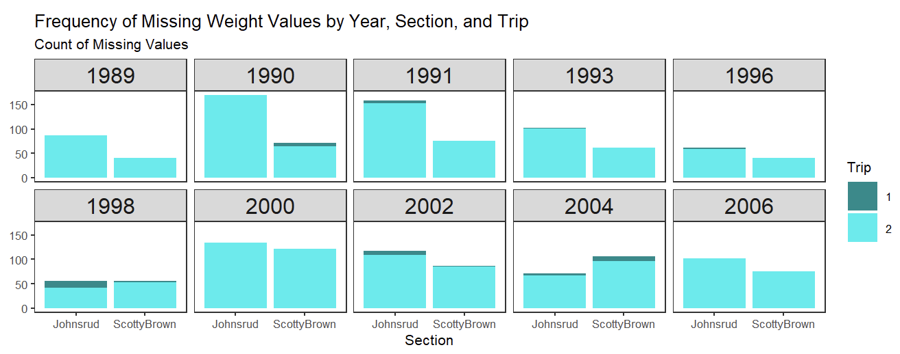
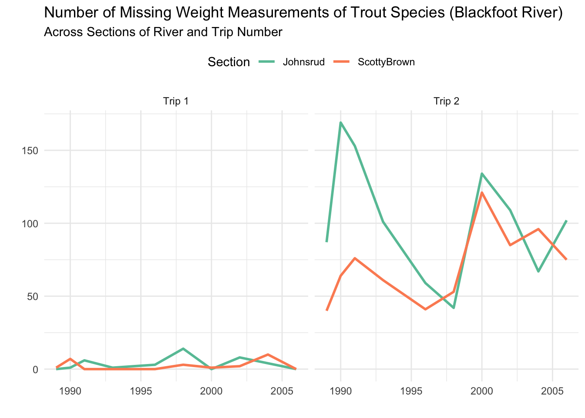
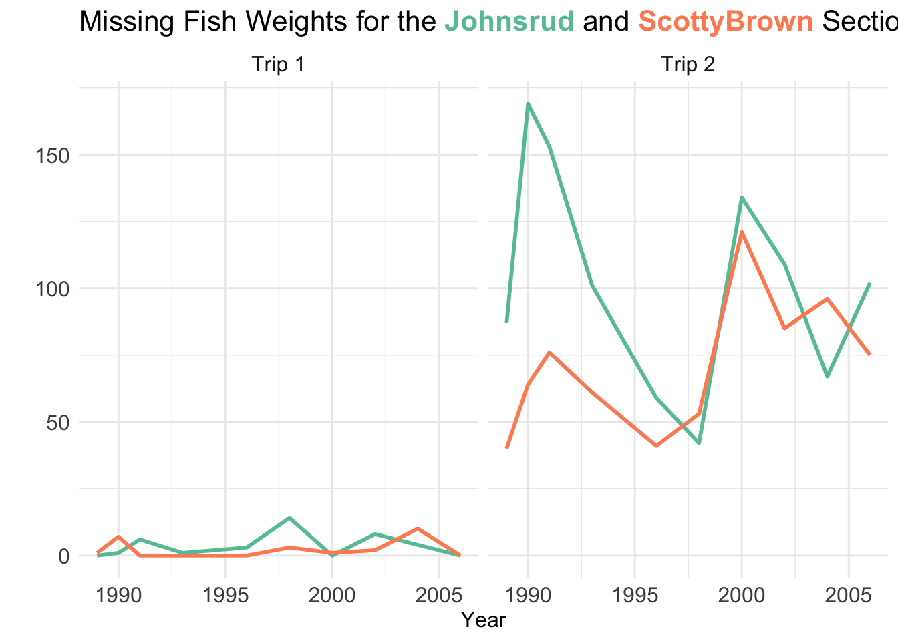

rescale_01 <- function(vec) {
if(!is.numeric(vec)) {
stop("Input vector is not numeric")
}
if(length(vec) <= 1) {
stop("Input vector length must have at least two elements")
}
range <- range(vec, na.rm = TRUE)
return((vec - range[1]) / (range[2] - range[1]))
}Cool Plots & Searching for Efficiency
Today we will…
- Review Lab 9
- Function Checks
- Creative Plots
- Additional Tools for Creativity / Clarity
- Lab 7 Peer Review
- Function Style
if()Style
- Work Time
- Lab 8: Searching for Efficiency
Lab 9
Vectorized Function Checks
. . .
How would you transform these input checks so the rescale_01() function is vectorized?
Function Checks for Data Frames
rescale_column <- function(df, var) {
df <- df |>
dplyr::mutate(across(.cols = {{ var }}, .fns = ~rescale_01(..x)
)
)
return(df)
}. . .
How would you check if the input df was a data frame?
Function Checks for Data Frames – Columns
rescale_column <- function(df, cols){
stopifnot(is.data.frame(df))
df <- df |>
dplyr::mutate(across(.cols = {{ cols }}, .fns = ~rescale_01(.x)
)
)
return(df)
}. . .
How would you check if the input cols were columns that existed in df?
Take Advanced R in the Spring!
Plots from Lab 7
Stacked Bars with Color!

Notice how their facets have more informative titles?
More Stacked Bars with Color!

Notice how every year with measurements is displayed?
Combining Year and Trip

Faceting by Year!

A Line Plot with Colors!

Do you want your legend on the left?
Code
fish |>
group_by(year, section, trip) |>
summarize(missing_count = sum(is.na(weight)), .groups = "drop") |>
mutate(trip = case_when(
trip == 1 ~ "Trip 1",
trip == 2 ~ "Trip 2")) |>
ggplot(aes(x = year, y = missing_count, color = section)) +
geom_line(linewidth = 1) +
scale_color_brewer(palette = "Set2") +
labs(
title = "Number of Missing Weight Measurements of Trout Species (Blackfoot River)",
x = "",
subtitle = "Across Sections of River and Trip Number",
y = "",
color = "Section") +
facet_wrap(~ trip) +
theme_minimal() +
theme(legend.position = "top")
Could you remove your legend?
Code
plot <- fish |>
group_by(year, section, trip) |>
summarize(missing_count = sum(is.na(weight)), .groups = "drop") |>
mutate(trip = case_when(
trip == 1 ~ "Trip 1",
trip == 2 ~ "Trip 2")) |>
ggplot(aes(x = year, y = missing_count, color = section)) +
geom_line(linewidth = 1) +
scale_color_brewer(palette = "Set2") +
labs(
title = "Missing Fish Weights for Trout Species on the Blackfoot River",
x = "Year",
y = "",
color = "Section") +
facet_wrap(~ trip) +
theme_minimal()
annotate_text <- data.frame(year = c(1994, 1993),
missing_count = c(150, 40),
trip = factor(c("Trip 2", "Trip 2"),
levels = c("Trip 1","Trip 2"),
),
section = factor(c("Johnsrud", "ScottyBrown"),
levels = c("Johnsrud", "ScottyBrown"))
)
plot +
geom_text(data = annotate_text, label = c("Johnsrud", "ScottyBrown")) +
theme(legend.position = "none",
plot.title = element_text(size = 12),
axis.text.x = element_text(size = 12),
axis.text.y = element_text(size = 12),
axis.title = element_text(size = 12),
strip.text.x = element_text(size = 12)
)
Could you remove your legend?
Code
library(ggtext)
fish |>
group_by(year, section, trip) |>
summarize(missing_count = sum(is.na(weight)), .groups = "drop") |>
mutate(trip = case_when(
trip == 1 ~ "Trip 1",
trip == 2 ~ "Trip 2")) |>
ggplot(aes(x = year, y = missing_count, color = section)) +
geom_line(linewidth = 1) +
scale_color_brewer(palette = "Set2") +
labs(
title = str_c("Missing Fish Weights for the ",
"<span style = 'color:#66C2A5'>**Johnsrud**</span>",
" and <span style = 'color:#FC8D62'>**ScottyBrown**</span>",
" Sections of the Blackfoot River"),
x = "Year",
y = "",
color = "Section") +
facet_wrap(~ trip) +
theme_minimal() +
theme(plot.title = ggtext::element_markdown(size = 16),
legend.position = "none",
axis.text.x = element_text(size = 12),
axis.text.y = element_text(size = 12),
axis.title = element_text(size = 12),
strip.text.x = element_text(size = 12)
)
Other Cool Stuff People Have Done!
Lab 7 Peer Review
Function Formatting
- There should be a new line after the opening {
- The closing } should be on its own line
- The body of the function should be indented
- The code uses whitespace around all commas and arithmetic operators
- The code uses new lines (returns) to eliminate character wrapping
Good
rescale_01 <- function(x) {
if (!is.numeric(x)) {
stop("Input must be a numeric vector")
}
if (length(x) <= 1) {
stop("Length of the input vector is not greater than 1")
}
get_range <- range(x, na.rm = TRUE)
(x - get_range[1]) / (get_range[2] - get_range[1])
}Not so good
rescale_01 <- function(x)
{
if (!is.numeric(x)) {
stop("Input must be a numeric vector")
}
if (length(x) <= 1) {
stop("Length of the input vector is not greater than 1")
}
get_range <- range(x, na.rm=TRUE)
(x-get_range[1]) / (get_range[2]-get_range[1])}if() on a single line?
rescale_01 <- function(x) {
if(!is.numeric(x)) stop("Input vector must be numeric.")
if(length(x) <= 1) stop("Input vector requires more than one element.")
range_1 <- range(x, na.rm = TRUE)
(x - range_1[1]) / (range_1[2] - range_1[1])
}This technically works because the stop() is on the same line as if().
. . .
But what if you have multiple things that happen if the condition is met?
if() on multiple lines
pluralize_gift <- function(gift){
# Check if the word ends in a y
if(str_detect(gift, "y$")){
# Replace the y at the end with an ies
gift <- str_replace(gift,
pattern = "y",
replacement = "ies")
}
# Check for a oo (goose)
else if(str_detect(gift,"oo")){
# Replace the oo with a ee
gift <- str_replace(gift,
pattern = "oo",
replacement = "ee")
}
else{
# Add an s to the end of the gift
gift <- str_c(gift, replacement = "s")
}
return(gift)
}Lab 8: Searching for Efficiency
Revisit previous lab problems through the lens of efficiency
- Use functions from
map()instead ofacross()- Reduce separate pipelines into a single pipeline